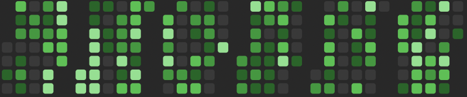

I am Dhruvin Gandhi

Actively writing code and solving problems.
Driven software engineer and researcher who believes that innovation and perseverance are the keys to transforming ideas into impactful solutions.
I see every project as an opportunity to push boundaries and drive innovation. My journey in tech is fueled by curiosity and a relentless pursuit of growth. From crafting AI-driven systems to optimizing distributed networks, I’m dedicated to creating technology that not only works but makes a difference. I thrive in environments where learning is constant and collaboration is key. Right now, I’m diving deep into the realms of NLP and distributed systems, mentoring aspiring engineers, and always looking for the next big challenge to tackle.
Areas of Interests:
- C++
- Distributed Systems
- Natural Language Processing
- Data Science